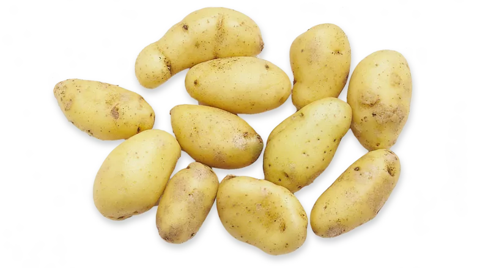

Potetmannen
En potet har mange poteter som er
laget av en potet som er inni
den store poteten og den
poteten heter potet
Star Wars er en gammel-ny sci-fiction trilogi, hvor mesteparten av handlingen skjer enten hos en gammel,
liten rynkete mann med navn Joda. (Joda, han heter Joda han Joda.) Navnet kommer av at faren ble spurt:
"Har du funnet et navn på ungen?" " Joda...., svarte faren" eller på et eller annet fly(romshit).
Slåssingen skjer med slike lysende sverd, som også kan bli sammenlignet med noen som dirigerer fly inn på rullebanen. MacGyver skal visstnok ha vært med i en av disse filmene, som C3-PO(H!), altså utkledd som en robot. Han skal også ha vært innvolvert i innspillingen, hvor noen spurte om noen hadde gaffa-teip, og MacGyver var (selfølgelig) den eneste som hadde.
Karakterene er like tilbakestående alle i hop, slik som Han Solo-Fanta, Obi-Kan-Han-Wan Kenobi, Qui-Gondol Gin, Joda, Dart Water, Dart Maule, noe stort, pelskledd, forvokst og hårete med 2 bein, Prinsesse Lei-av, Anniken Skyvæter og visstnok Bush, som Mango-med fruktfett.
Star Wars kan nå også ses på kino nær din lokale planet, hvor billetene aldri selges. Dette medfører at du må snike deg inn i kinosalen for å se Star Wars.
Filmen handler for det meste om roboter og hovedpersonen er Artig-Ditto(R2-D2) som er en liten robot som alltid redder dagen med sine håpløse kokkeferdigheter. Han er med i hele serien og klarer aldri helt å dø. Rtwo-Dtwo spilles av kona til Obama, og derfor har stemmen blitt gjort om til robotsnakk.
Etter at Disney kjøpte Star Vars, skal de lage tre nye filmer: The Force Awakens, The Force Brushes Its Teeth, og The Force Goes To School. Alle filmene skal handle om (Blu)Ray, Finn(mark) og Po, (fra Kung Fu Panda). Skurkene er på restaurant og har akkuratt fått deres First Order, men de er ikke fornøyd. Også med i filmen er en oransj rosin, Mat Kananata.
Også i 2017 kommer den nye filmen Rogue Uno (sponset av spillet UNO) ut. Den er en unødvedig film som visstnok skal handle om en gjeng med poteter som skal stjele planene til dødsstjernen. Det sies at MacGyver har hovedrollen i filmen, og han skal visstnok ha blitt betalt halve Disneys budsjett for rollen. Rogue Uno tar plass i det samme universet, som ikke er så langt unna men fortsatt et stykke borte. Du må snike deg inn i kinoen 14 desember for å se den, og bare da kan du kanskje se en ufo. Rogue Uno er et stort cash-grab av musen Mikke, i hans plan om å ta over verden sammen med Illuminati.
hentet fra
Store norske potetikon
Her er den poteten som er laget av den poteten jeg snakket:)

klikk på denne for å få poteter:)